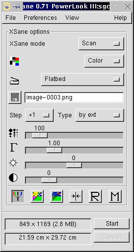
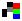
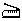
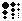
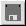

Index
Hauptfenster:
Farb Korrektur:
Standard Optionen Fenster
Erweiterte Optionen Fenster
Vorschau:
Einstellungen:
|
Im Scanmodus werden Bilder eingescannt und in eine Datei gespeichert.


Scanmodus:
Scanmodus auswählen: Farbe, Graustufen, Halbton, Strichzeichnung.

Scanquelle:
Scanquelle auswählen, z.B.: Flachbett, Durchlicht, Automatischer Dokumenten Einzug.

Scan Auflösung:
Auflösung auswählen, die zum Scannen benutzt werden soll. Wenn das Backend
einen Bereich zur Auswahl stellt (z.B. 100-300 dpi), dann stellt XSane einen
Schieber oder eine Liste zum Auswählen der Auflösung dar. Sie können dies unter
Einstellungen/Auflösungsliste zeigen auswählen.
Das Backend kann eine Liste ansatt eines Bereichs zur Verfügung stellen.
In diesem Fall kann der Schieber nicht aktiviert werden.
Um die Auflösung mit dem Schieber genau einzustellen, wählen Sie den Schieber
mit der Maus an und benutzen Sie die Cursortasten um den Wert in Einer-Schritten
zu verändern, wenn Sie dabei die strg Taste gedrückt halten verändert sich der
Wert in Zehner-Schritten.

Dateinamen auswählen:
Wenn Sie das Diskettensymbol drücken öffnet sich ein Suchdialog, in dem Sie
den Namen der Datei, die beim nächsten Scan erzeugt wird, auswählen.
Sie können den Dateinamen auch direkt in dem Katen rechts neben dem Diskettensymbol
eingeben. Wenn kein Pfad eingegeben wurde, speichert XSane die Datei in dem Verzeichnis,
das unter Einstellungen/Arbeitsverzeichnis ändern eingestellt wurde.
Schritt:
Wenn ein Zähler im Dateinamen enthalten ist (Bild-0001.jpg), dann wird der
Zähler nach dem Scannen um die Nummer, die in dem Kasten ausgewählt ist,
erhöht.
Typ:
nach erw bedeutet, dass der Dateityp durch die Erweiterung des Dateinamens
ausgewählt wird. Wenn Sie einen Dateityp auswählen hängt XSane automatisch die
passende Erweiterung an den Dateinamen an, Sie sollten dann keine Erweiterung angeben.
Unterstützte Dateitypen:
Pnm und ps (und raw) stehen immer zur Verfügung.
Die anderen Formate sind nur verfügbar, wenn die notwendigen
Bibliotheken vorhanden sind und die Unterstützung eincompiliert wurde.
Für png benötigen Sie libpng und libz, für
jpeg wird die jpeglib benötigt, für tiff libtiff.
Das raw Format ist ein 16 Bit Binär-Format. Einige Programme
können raw Dateien als pnm-Format lesen. Für das pnm
Format sind nur 8 Bit binär und ascii und 16 Bit ascii definiert.
Wir schlagen vor, dieses Format nicht zum Speichern von Bildern zu verwenden,
die Sie sich ansehen wollen. Das Format is für die Nachbearbeitung mit
Programmen, die Sie selber schreiben, vorgesehen. Der Vorteil dieses
Formats ist, dass deutlich kleinere Dateien erzeugt werden als im 16 Bit
ascii pnm Format.
Die unterstützten Ausgabeformate hängen von der Farbtiefe des gescannten Bildes ab:
1 Bit/Pixel schwarz/weiss Modus:
pnm = pbm, png
ps, jpeg und tiff werden in 8 Bit graustufen gewandelt.
8 Bits/Pixel graustufen Modus:
pnm = pgm, png, ps, jpeg und tiff
16 Bits/Pixel graustufen Modus (9-16 Bits):
pnm (ascii), png, raw und tiff
24 Bits/Pixel RGB-Farb Modus (8 Bits/Farbe):
pnm = ppm, png, ps, jpeg und tiff
48 Bits/Pixel RGB-Farb Modus (9-16 Bits/Farbe):
pnm (ascii), png, raw und tiff
optional: (default: ncht eincompiliert)
32 Bits/Pixel RGBA-Farb Modus (8 Bits/Farbe):
rgba (raw) und png mit alpha Kanal
64 Bits/Pixel RGBA-Farb Modus (9-16 Bits/Farbe):
rgba (raw) und png mit alpha Kanal
|